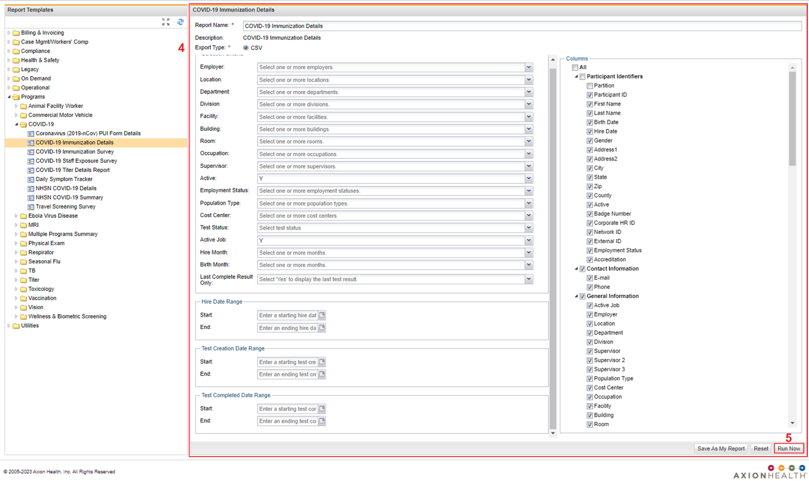
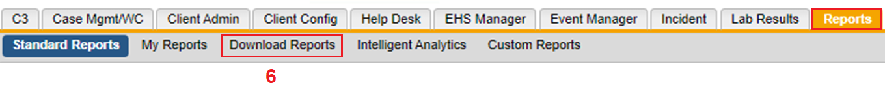

On the top horizontal navigational panel, click the Reports tab.
On the resulting horizontal navigation panel below, click the Standard Reportstab.
On the Report Templatessection, choose a Standard Report that includes the modified charting form.
If a question is removed that normally populates in the Standard Report, the field will still be present in the report but it will be blank. When you run a Standard Report and find that your changes are not outputting as expected, it could be that the modifications made no longer link properly. This is when Custom Reports can be used to get a report.

Make changes in the report parameters as necessary.
Click Run Now. The example below is taken from Covid-19 Immunization Details.

To find your Report, under the Reports tab, click the Download Reports.